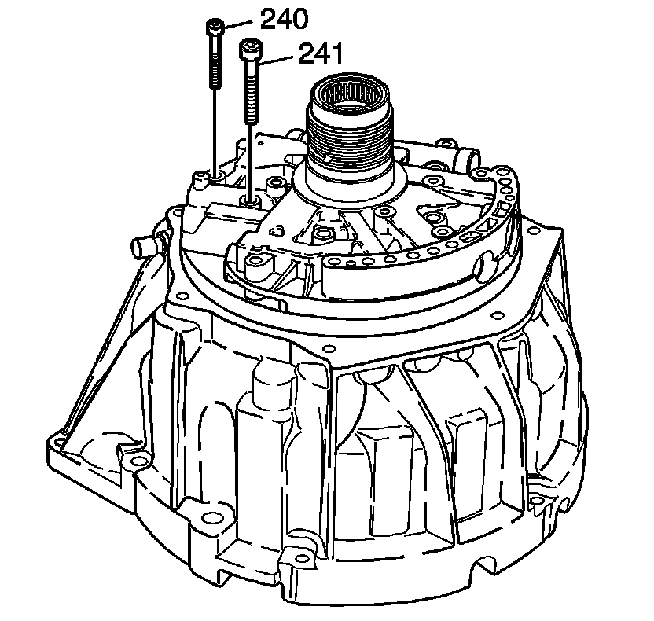

Transmission Fluid Pump Removal
Transmission Fluid Pump Removal

1. Remove the oil pump to torque converter housing bolts (240, 241).

2. Remove the oil pump cover (202).

3. Remove the pump vane ring (221).
4. Remove the pump vanes (222).
5. Remove the pump rotor (223).
6. Remove the pump rotor guide (224).
7. Remove the pump vane ring (225).

8. Remove the pump slide spring (219).
9. Remove the pump slide (216).
10. Remove the fluid pump slide pin (231).
11. Remove the pump slide ring (220, 242).
12. Remove the fluid pump support (217) and the fluid pump slide seal (218).